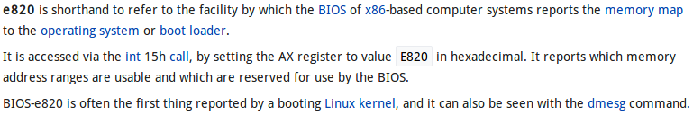
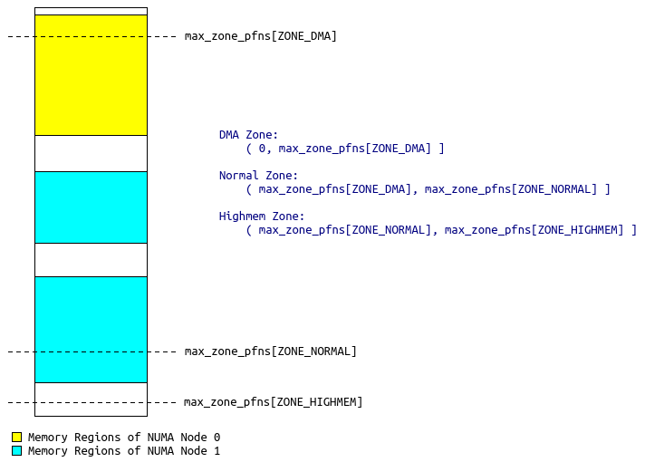
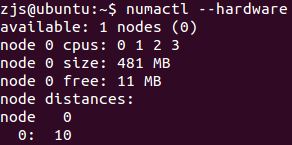
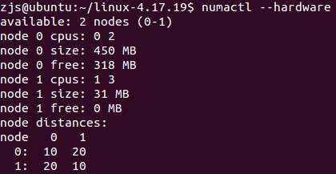
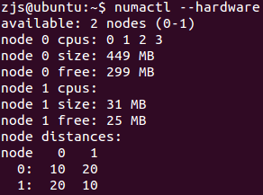
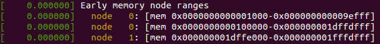

这段时间，因为需要研究如何在内核里为应用程序做冷页迁移（把冷页从RAM迁移到NVM），就需要知道Linux是如何管理物理内存的，包括：
- Linux如何知道存在哪些可用的物理内存（以及其类型）；
- Linux如何划分各种内存区域（DMA、NORMAL和HIGHMEM等）；
- NUMA节点是如何创建的；
- 这三者的关系是怎样的。
研究是基于Linux 4.17.19的代码，实验环境是qemu-kvm中的Ubuntu Server 16.04。环境搭建过程如《安装qemu-kvm以及配置桥接网络》所示。
更新好4.17.19的内核之后，使用如下命令启动qemu，指定512MB的内存：
qemu-system-x86_64 -m 512 -enable-kvm -smp 4 -vga std ubuntu.img
进入系统后，执行dmesg查看内核日志：
[ 0.000000] Linux version 4.17.19 (zjs@ubuntu) (gcc version 5.4.0 20160609 (Ubuntu 5.4.0-6ubuntu1~16.04.10)) #15 SMP Fri Oct 5 16:37:09 CST 2018 [ 0.000000] Command line: BOOT_IMAGE=/boot/vmlinuz-4.17.19 root=UUID=895bf2a8-6111-4d7b-92dd-e76ab8b8265a ro [ 0.000000] x86/fpu: x87 FPU will use FXSAVE [ 0.000000] e820: BIOS-provided physical RAM map: [ 0.000000] BIOS-e820: [mem 0x0000000000000000-0x000000000009fbff] usable [ 0.000000] BIOS-e820: [mem 0x000000000009fc00-0x000000000009ffff] reserved [ 0.000000] BIOS-e820: [mem 0x00000000000f0000-0x00000000000fffff] reserved [ 0.000000] BIOS-e820: [mem 0x0000000000100000-0x000000001fffdfff] usable [ 0.000000] BIOS-e820: [mem 0x000000001fffe000-0x000000001fffffff] reserved [ 0.000000] BIOS-e820: [mem 0x00000000feffc000-0x00000000feffffff] reserved [ 0.000000] BIOS-e820: [mem 0x00000000fffc0000-0x00000000ffffffff] reserved [ 0.000000] NX (Execute Disable) protection: active [ 0.000000] SMBIOS 2.4 present. [ 0.000000] DMI: QEMU Standard PC (i440FX + PIIX, 1996), BIOS Bochs 01/01/2011 [ 0.000000] e820: update [mem 0x00000000-0x00000fff] usable ==> reserved [ 0.000000] e820: remove [mem 0x000a0000-0x000fffff] usable [ 0.000000] e820: last_pfn = 0x1fffe max_arch_pfn = 0x400000000 [ 0.000000] MTRR default type: write-back [ 0.000000] MTRR fixed ranges enabled: [ 0.000000] 00000-9FFFF write-back [ 0.000000] A0000-BFFFF uncachable [ 0.000000] C0000-FFFFF write-protect [ 0.000000] MTRR variable ranges enabled: [ 0.000000] 0 base 0080000000 mask FF80000000 uncachable [ 0.000000] 1 disabled [ 0.000000] 2 disabled [ 0.000000] 3 disabled [ 0.000000] 4 disabled [ 0.000000] 5 disabled [ 0.000000] 6 disabled [ 0.000000] 7 disabled [ 0.000000] x86/PAT: PAT not supported by CPU. [ 0.000000] x86/PAT: Configuration [0-7]: WB WT UC- UC WB WT UC- UC [ 0.000000] found SMP MP-table at [mem 0x000f0ae0-0x000f0aef] mapped at [ (ptrval)] [ 0.000000] Scanning 1 areas for low memory corruption [ 0.000000] Base memory trampoline at [ (ptrval)] 99000 size 24576 [ 0.000000] BRK [0x04901000, 0x04901fff] PGTABLE [ 0.000000] BRK [0x04902000, 0x04902fff] PGTABLE [ 0.000000] BRK [0x04903000, 0x04903fff] PGTABLE [ 0.000000] BRK [0x04904000, 0x04904fff] PGTABLE [ 0.000000] BRK [0x04905000, 0x04905fff] PGTABLE [ 0.000000] RAMDISK: [mem 0x1ea9d000-0x1f24bfff] [ 0.000000] ACPI: Early table checksum verification disabled [ 0.000000] ACPI: RSDP 0x00000000000F08D0 000014 (v00 BOCHS ) [ 0.000000] ACPI: RSDT 0x000000001FFFFCFC 000034 (v01 BOCHS BXPCRSDT 00000001 BXPC 00000001) [ 0.000000] ACPI: FACP 0x000000001FFFF1C0 000074 (v01 BOCHS BXPCFACP 00000001 BXPC 00000001) [ 0.000000] ACPI: DSDT 0x000000001FFFE040 001180 (v01 BOCHS BXPCDSDT 00000001 BXPC 00000001) [ 0.000000] ACPI: FACS 0x000000001FFFE000 000040 [ 0.000000] ACPI: SSDT 0x000000001FFFF234 000A00 (v01 BOCHS BXPCSSDT 00000001 BXPC 00000001) [ 0.000000] ACPI: APIC 0x000000001FFFFC34 000090 (v01 BOCHS BXPCAPIC 00000001 BXPC 00000001) [ 0.000000] ACPI: HPET 0x000000001FFFFCC4 000038 (v01 BOCHS BXPCHPET 00000001 BXPC 00000001) [ 0.000000] ACPI: Local APIC address 0xfee00000 [ 0.000000] No NUMA configuration found [ 0.000000] Faking a node at [mem 0x0000000000000000-0x000000001fffdfff] [ 0.000000] NODE_DATA(0) allocated [mem 0x1fffa000-0x1fffdfff] [ 0.000000] tsc: Fast TSC calibration using PIT [ 0.000000] Zone ranges: [ 0.000000] DMA [mem 0x0000000000001000-0x0000000000ffffff] [ 0.000000] DMA32 [mem 0x0000000001000000-0x000000001fffdfff] [ 0.000000] Normal empty [ 0.000000] Movable zone start for each node [ 0.000000] Early memory node ranges [ 0.000000] node 0: [mem 0x0000000000001000-0x000000000009efff] [ 0.000000] node 0: [mem 0x0000000000100000-0x000000001fffdfff] [ 0.000000] Reserved but unavailable: 100 pages [ 0.000000] Initmem setup node 0 [mem 0x0000000000001000-0x000000001fffdfff] [ 0.000000] On node 0 totalpages: 130972 [ 0.000000] DMA zone: 64 pages used for memmap [ 0.000000] DMA zone: 21 pages reserved [ 0.000000] DMA zone: 3998 pages, LIFO batch:0 [ 0.000000] DMA32 zone: 1984 pages used for memmap [ 0.000000] DMA32 zone: 126974 pages, LIFO batch:31
===========================阶段一：从BIOS获取物理内存布局=========================
从dmesg的信息可以看出，最先输出的是“e820: BIOS-provided physical RAM map:”，如上红色部分。很明显，这是从BIOS获取了内存布局列表。那么为何名为e820呢？Wiki上的介绍为：

也就是说，通过15号中断（并在AX寄存器中指定0xE820），可以从BIOS获取物理内存布局信息。
正常情况下，汇编代码调用arch/x86/boot/main.c中的main()函数，main()函数会调用detect_memory()函数，其代码如下：
void main(void)
{
/* First, copy the boot header into the "zeropage" */
copy_boot_params();
/* Initialize the early-boot console */
console_init();
if (cmdline_find_option_bool("debug"))
puts("early console in setup code\n");
/* End of heap check */
init_heap();
/* Make sure we have all the proper CPU support */
if (validate_cpu()) {
puts("Unable to boot - please use a kernel appropriate "
"for your CPU.\n");
die();
}
/* Tell the BIOS what CPU mode we intend to run in. */
set_bios_mode();
/* Detect memory layout */
detect_memory();
/* Set keyboard repeat rate (why?) and query the lock flags */
keyboard_init();
/* Query Intel SpeedStep (IST) information */
query_ist();
/* Query APM information */
#if defined(CONFIG_APM) || defined(CONFIG_APM_MODULE)
query_apm_bios();
#endif
/* Query EDD information */
#if defined(CONFIG_EDD) || defined(CONFIG_EDD_MODULE)
query_edd();
#endif
/* Set the video mode */
set_video();
/* Do the last things and invoke protected mode */
go_to_protected_mode();
}
detect_memory()定义在arch/x86/boot/memory.c中：
int detect_memory(void)
{
int err = -1;
if (detect_memory_e820() > 0)
err = 0;
if (!detect_memory_e801())
err = 0;
if (!detect_memory_88())
err = 0;
return err;
}
其逻辑很简单，先试试用e820协议从BIOS获取内存布局，不成功的话试试e801，再试88。一般而言都是e820就可以了，于是就看detect_memory_e820的实现：
static int detect_memory_e820(void)
{
int count = 0;
struct biosregs ireg, oreg;
struct boot_e820_entry *desc = boot_params.e820_table;
static struct boot_e820_entry buf; /* static so it is zeroed */
initregs(&ireg);
ireg.ax = 0xe820;
ireg.cx = sizeof buf;
ireg.edx = SMAP;
ireg.di = (size_t)&buf;
do {
intcall(0x15, &ireg, &oreg);
ireg.ebx = oreg.ebx; /* for next iteration... */
/* BIOSes which terminate the chain with CF = 1 as opposed
to %ebx = 0 don't always report the SMAP signature on
the final, failing, probe. */
if (oreg.eflags & X86_EFLAGS_CF)
break;
/* Some BIOSes stop returning SMAP in the middle of
the search loop. We don't know exactly how the BIOS
screwed up the map at that point, we might have a
partial map, the full map, or complete garbage, so
just return failure. */
if (oreg.eax != SMAP) {
count = 0;
break;
}
*desc++ = buf;
count++;
} while (ireg.ebx && count < ARRAY_SIZE(boot_params.e820_table));
return boot_params.e820_entries = count;
}
逻辑很简单，每次用INT 15向BIOS索要一条entry信息，最后把表放在boot_params.e820_table里。OK，与BIOS打交道的故事到此结束~接着讲kernel怎么处理从BIOS获取的boot_params.e820_table。
=======================阶段二：将boot_params.e820_table转换成kernel需要的e820_table===================
在arch/x86/kernel/x86_init.c中，用函数指针指定了内存初始化的函数：
/*
* The platform setup functions are preset with the default functions
* for standard PC hardware.
*/
struct x86_init_ops x86_init __initdata = {
.resources = {
.probe_roms = probe_roms,
.reserve_resources = reserve_standard_io_resources,
.memory_setup = e820__memory_setup_default,
},
// 代码略
};
接着，在arch/x86/kernel/setup.c中，调用了e820__memory_setup()。该函数定义在arch/x86/kernel/e820.c中：
void __init e820__memory_setup(void)
{
char *who;
/* This is a firmware interface ABI - make sure we don't break it: */
BUILD_BUG_ON(sizeof(struct boot_e820_entry) != 20);
who = x86_init.resources.memory_setup();
memcpy(e820_table_kexec, e820_table, sizeof(*e820_table_kexec));
memcpy(e820_table_firmware, e820_table, sizeof(*e820_table_firmware));
pr_info("e820: BIOS-provided physical RAM map:\n");
e820__print_table(who);
}
这里的x86_init.resources.memory_setup正指向e820__memory_setup_default函数。e820__memory_setup_default()最重要的工作，莫过于把boot_params.e820_table这张表转换成kernel的e820_table表。之后，e820__memory_setup()又把kernel的e820_table复制到了e820_table_kexec和e820_table_firmware两份。最后打印出dmesg中看到的那些消息。
之所以要做转换，是因为boot_params.e820_table的entry的类型是struct boot_e820_entry，而kernel需要的e820_table的entry的类型是struct e820_type。kernel需要的这个表的类型定义在arch/x86/include/asm/e820/types.h，如下：
enum e820_type {
E820_TYPE_RAM = 1,
E820_TYPE_RESERVED = 2,
E820_TYPE_ACPI = 3,
E820_TYPE_NVS = 4,
E820_TYPE_UNUSABLE = 5,
E820_TYPE_PMEM = 7,
E820_TYPE_PRAM = 12,
E820_TYPE_RESERVED_KERN = 128,
};
struct e820_entry {
u64 addr;
u64 size;
enum e820_type type;
} __attribute__((packed));
struct e820_table {
__u32 nr_entries;
struct e820_entry entries[E820_MAX_ENTRIES];
};
在arch/x86/kernel/e820.c中，定义了一系列对e820_table进行增删改查的函数，比如向表追加一项的函数：
/*
* Add a memory region to the kernel E820 map.
*/
static void __init __e820__range_add(struct e820_table *table, u64 start, u64 size, enum e820_type type)
{
int x = table->nr_entries;
if (x >= ARRAY_SIZE(table->entries)) {
pr_err("e820: too many entries; ignoring [mem %#010llx-%#010llx]\n", start, start + size - 1);
return;
}
table->entries[x].addr = start;
table->entries[x].size = size;
table->entries[x].type = type;
table->nr_entries++;
}
通过该函数就能发现，e820_table其实是一个很简单的数组。相应的还有删除操作：
/* Remove a range of memory from the E820 table: */
u64 __init e820__range_remove(u64 start, u64 size, enum e820_type old_type, bool check_type)
{
// 代码略
}
还有对表进行排序、去重的操作：
int __init e820__update_table(struct e820_table *table)
{
// 代码略
}
转化的代码非常简单：
static int __init __append_e820_table(struct boot_e820_entry *entries, u32 nr_entries)
{
struct boot_e820_entry *entry = entries;
while (nr_entries) {
u64 start = entry->addr;
u64 size = entry->size;
u64 end = start + size - 1;
u32 type = entry->type;
/* Ignore the entry on 64-bit overflow: */
if (start > end && likely(size))
return -1;
e820__range_add(start, size, type);
entry++;
nr_entries--;
}
return 0;
}
可以看出boot_e820_entry与e820_entry之间其实没有区别。。。kernel这么“多此一举”，应该是为了兼容将来不同的boot_e820_entry的变化吧。
而e820__memory_setup_default()的实现就是调用了上述函数：
/*
* Pass the firmware (bootloader) E820 map to the kernel and process it:
*/
char *__init e820__memory_setup_default(void)
{
char *who = "BIOS-e820";
/*
* Try to copy the BIOS-supplied E820-map.
*
* Otherwise fake a memory map; one section from 0k->640k,
* the next section from 1mb->appropriate_mem_k
*/
if (append_e820_table(boot_params.e820_table, boot_params.e820_entries) < 0) {
u64 mem_size;
/* Compare results from other methods and take the one that gives more RAM: */
if (boot_params.alt_mem_k < boot_params.screen_info.ext_mem_k) {
mem_size = boot_params.screen_info.ext_mem_k;
who = "BIOS-88";
} else {
mem_size = boot_params.alt_mem_k;
who = "BIOS-e801";
}
e820_table->nr_entries = 0;
e820__range_add(0, LOWMEMSIZE(), E820_TYPE_RAM);
e820__range_add(HIGH_MEMORY, mem_size << 10, E820_TYPE_RAM);
}
/* We just appended a lot of ranges, sanitize the table: */
e820__update_table(e820_table);
return who;
}
至此，来自BIOS的e820表，终于转化成了kernel需要的e820表了，这个表里记录着所有物理内存的起始地址、长度以及类型。
============================阶段三：注册memblock============================
之前的所有操作，都是与具体硬件密切相关的。比如前面两个阶段，都是x86平台上e820相关的操作，而在ARM平台就完全是别的方式了。因此，有了e820_table后，还需要再转换成kernel中体系结构无关的表示形式。
在kernel中，所有的物理内存都以抽象的memblock的形式管理。相关数据结构定义在include/linux/memblock.h中。首先是struct memblock_region，它描述一段连续的物理内存：
struct memblock_region {
phys_addr_t base;
phys_addr_t size;
unsigned long flags;
#ifdef CONFIG_HAVE_MEMBLOCK_NODE_MAP
int nid;
#endif
};
每一段物理内存都有起始地址、长度、一些属性标记以及属于哪一个NUMA node。之后，用一个struct memblock_region的数组，表示所有的某一类内存：
struct memblock_type {
unsigned long cnt; /* number of regions */
unsigned long max; /* size of the allocated array */
phys_addr_t total_size; /* size of all regions */
struct memblock_region *regions;
char *name;
};
那么有哪些类别的内存呢？在kernel只分两类：可用内存与保留内存。可用内存就是可以由伙伴分配器动态分配的内存，而保留内存通常是预留给某些硬件专用的。整个系统内所有的内存都由一个全局的struct memblock表示：
struct memblock {
bool bottom_up; /* is bottom up direction? */
phys_addr_t current_limit;
struct memblock_type memory;
struct memblock_type reserved;
#ifdef CONFIG_HAVE_MEMBLOCK_PHYS_MAP
struct memblock_type physmem;
#endif
};
extern struct memblock memblock;
include/linux/memblock.h中定义、mm/memblock.c中实现了一个关键函数：
/**
* memblock_add_range - add new memblock region
* @type: memblock type to add new region into
* @base: base address of the new region
* @size: size of the new region
* @nid: nid of the new region
* @flags: flags of the new region
*
* Add new memblock region [@base,@base+@size) into @type. The new region
* is allowed to overlap with existing ones - overlaps don't affect already
* existing regions. @type is guaranteed to be minimal (all neighbouring
* compatible regions are merged) after the addition.
*
* RETURNS:
* 0 on success, -errno on failure.
*/
int __init_memblock memblock_add_range(struct memblock_type *type,
phys_addr_t base, phys_addr_t size,
int nid, unsigned long flags)
用于添加某一个类型的内存区域。之后，又实现了两个辅助函数，都是对memblock_add_range()的简单包装：
int __init_memblock memblock_add(phys_addr_t base, phys_addr_t size)
{
phys_addr_t end = base + size - 1;
memblock_dbg("memblock_add: [%pa-%pa] %pF\n",
&base, &end, (void *)_RET_IP_);
return memblock_add_range(&memblock.memory, base, size, MAX_NUMNODES, 0);
}
int __init_memblock memblock_reserve(phys_addr_t base, phys_addr_t size)
{
phys_addr_t end = base + size - 1;
memblock_dbg("memblock_reserve: [%pa-%pa] %pF\n",
&base, &end, (void *)_RET_IP_);
return memblock_add_range(&memblock.reserved, base, size, MAX_NUMNODES, 0);
}
分别是添加一块可用内存和添加一块保留内存。
回到arch/x86/kernel/e820.c。在产生了e820_table之后，kernel就需要根据e820_table来创建memblock，即把体系结构相关的物理内存信息转换成体系结构无关的物理内存信息。这个工作由
void __init e820__memblock_setup(void)
{
int i;
u64 end;
u64 addr = 0;
/*
* The bootstrap memblock region count maximum is 128 entries
* (INIT_MEMBLOCK_REGIONS), but EFI might pass us more E820 entries
* than that - so allow memblock resizing.
*
* This is safe, because this call happens pretty late during x86 setup,
* so we know about reserved memory regions already. (This is important
* so that memblock resizing does no stomp over reserved areas.)
*/
memblock_allow_resize();
for (i = 0; i < e820_table->nr_entries; i++) {
struct e820_entry *entry = &e820_table->entries[i];
end = entry->addr + entry->size;
if (addr < entry->addr)
memblock_reserve(addr, entry->addr - addr);
addr = end;
if (end != (resource_size_t)end)
continue;
/*
* all !E820_TYPE_RAM ranges (including gap ranges) are put
* into memblock.reserved to make sure that struct pages in
* such regions are not left uninitialized after bootup.
*/
if (entry->type != E820_TYPE_RAM && entry->type != E820_TYPE_RESERVED_KERN)
memblock_reserve(entry->addr, entry->size);
else
memblock_add(entry->addr, entry->size);
}
/* Throw away partial pages: */
memblock_trim_memory(PAGE_SIZE);
memblock_dump_all();
}
完成。代码中标为红色的四行就是关键，对于E820_TYPE_RAM（也就是普通的可用内存）和E820_TYPE_RESERVED_KERN（被kernel代码占用的内存），加入可用内存中，由伙伴分配器管理。而其他类型的内存则加入保留内存中。从memblock_add()和memblock_reserve()的代码可以看出，目前为止，NUMA node的信息都是留空的。
这里可以解释过去的一个疑惑了：为什么服务器上插的NVM内存条没有被kernel当作可用内存？这是因为BIOS通过e820_table向kernel报告了NVM内存条的起始地址、长度和类型，而其类型为E820_TYPE_PMEM。于是就被加入了保留内存中。如果将上面四行红色代码中第一行改为：
if (entry->type != E820_TYPE_RAM && entry->type != E820_TYPE_RESERVED_KERN && entry->type != E820_TYPE_PMEM)
那么NVM内存也会被当作可用内存了。
至此，memblock信息已经建立好了，kernel即将可以使用伙伴分配器分配物理页了。
==============================阶段四：划分内存区域=============================
如果按照前面说的，让NVM内存也被当作可用内存，那么kernel分配内存时，岂不是有时分配的是RAM页，有时分配的是NVM页，而无法通过代码控制？这是无法接受的，我需要代码可以显式地分配RAM页还是NVM页。
我最初想到的是，kernel中会对内存进行区域划分，比如ZONE_DMA、ZONE_NORMAL、ZONE_HIGHMEM等，而相应地，在分配页时，可以指定从哪个区域分配，比如GFP_DMA、GFP_HIGHMEM等等。那么，如果我额外定义一个类型，比如叫ZONE_PMEM，把NVM内存的物理地址划分到ZONE_PMEM里面，然后分配时指定一个GFP_PMEM的参数，不就可以明确地分配NVM页了吗？
于是我研究了kernel中ZONE相关的代码。各种ZONE类型的定义在头文件include/linux/mmzone.h中。
enum zone_type {
#ifdef CONFIG_ZONE_DMA
ZONE_DMA,
#endif
#ifdef CONFIG_ZONE_DMA32
ZONE_DMA32,
#endif
ZONE_NORMAL,
#ifdef CONFIG_HIGHMEM
ZONE_HIGHMEM,
#endif
ZONE_MOVABLE,
#ifdef CONFIG_ZONE_DEVICE
ZONE_DEVICE,
#endif
__MAX_NR_ZONES
};
于是__MAX_NR_ZONES自动地变成了ZONE的类型数量。在arch/x86/mm/init.c中，zone_sizes_init()函数完成了各个ZONE的划分：
void __init zone_sizes_init(void)
{
unsigned long max_zone_pfns[MAX_NR_ZONES];
memset(max_zone_pfns, 0, sizeof(max_zone_pfns));
#ifdef CONFIG_ZONE_DMA
max_zone_pfns[ZONE_DMA] = min(MAX_DMA_PFN, max_low_pfn);
#endif
#ifdef CONFIG_ZONE_DMA32
max_zone_pfns[ZONE_DMA32] = min(MAX_DMA32_PFN, max_low_pfn);
#endif
max_zone_pfns[ZONE_NORMAL] = max_low_pfn;
#ifdef CONFIG_HIGHMEM
max_zone_pfns[ZONE_HIGHMEM] = max_pfn;
#endif
free_area_init_nodes(max_zone_pfns);
}
可以发现，至今所有的物理内存管理都没有涉及到NUMA。我曾经一度困惑ZONE与NUMA到底是个怎样的关系。目前看，ZONE是一个全局的配置，与NUMA无关。ZONE对全局的物理地址空间进行划分。即使是NUMA，整个系统也只有一个全局的物理地址空间。因此，很有可能某个NUMA node既有ZONE_DMA，又有ZONE_NORMAL，而有的NUMA node可能只有ZONE_NORMAL，如下图所示的情况：

NUMA Node 0在ZONE_DMA与ZONE_NORMAL中各有一部分，而NUMA Node 1则在ZONE_NORMAL与ZONE_HIGHMEM中各有一部分。
可以发现，ZONE的划分是一维线性的，灵活度不高。如果某段NVM在物理上处于两段RAM之间，那么就没法用ZONE的办法把它们分为两个“阵营”。于是，功利性的我就没有对ZONE做太多的研究。其实以后有空可以研究一下ZONE_xxx与GFP_xxx之间的关联。
===============================阶段五：创建NUMA节点================================
既然没法使用ZONE的机制将NVM与RAM区分开来，我想到了Intel的OTC组的设计——虚拟一个NUMA节点，把NVM都关联到该虚拟节点上，这样分配内存页时，使用
/* * Allocate pages, preferring the node given as nid. When nid == NUMA_NO_NODE, * prefer the current CPU's closest node. Otherwise node must be valid and * online. */ struct page *alloc_pages_node(int nid, gfp_t gfp_mask, unsigned int order);
即在分配页指定NUMA节点号，即可显式控制分配NVM页还是RAM页。所以，我需要研究Linux是怎么创建NUMA节点的，我如何“虚构”NUMA信息呢？
dmesg信息中绿色的部分就是NUMA相关的信息。代码都在arch/x86/mm/numa.c中。整个过程的入口是x86_numa_init()函数：
/**
* x86_numa_init - Initialize NUMA
*
* Try each configured NUMA initialization method until one succeeds. The
* last fallback is dummy single node config encomapssing whole memory and
* never fails.
*/
void __init x86_numa_init(void)
{
if (!numa_off) {
#ifdef CONFIG_ACPI_NUMA
if (!numa_init(x86_acpi_numa_init))
return;
#endif
#ifdef CONFIG_AMD_NUMA
if (!numa_init(amd_numa_init))
return;
#endif
}
numa_init(dummy_numa_init);
}
该函数被arch/x86/mm/numa_64.c（或者arch/x86/mm/numa_32.c，看系统是32位还是64位）调用。先看最最简单的、也是本实验中被执行的
numa_init(dummy_numa_init);
numa_init()函数的参数是一个函数指针：
static int __init numa_init(int (*init_func)(void))
{
int i;
int ret;
for (i = 0; i < MAX_LOCAL_APIC; i++)
set_apicid_to_node(i, NUMA_NO_NODE);
nodes_clear(numa_nodes_parsed);
nodes_clear(node_possible_map);
nodes_clear(node_online_map);
memset(&numa_meminfo, 0, sizeof(numa_meminfo));
WARN_ON(memblock_set_node(0, ULLONG_MAX, &memblock.memory,
MAX_NUMNODES));
WARN_ON(memblock_set_node(0, ULLONG_MAX, &memblock.reserved,
MAX_NUMNODES));
/* In case that parsing SRAT failed. */
WARN_ON(memblock_clear_hotplug(0, ULLONG_MAX));
numa_reset_distance();
ret = init_func();
if (ret < 0)
return ret;
/*
* We reset memblock back to the top-down direction
* here because if we configured ACPI_NUMA, we have
* parsed SRAT in init_func(). It is ok to have the
* reset here even if we did't configure ACPI_NUMA
* or acpi numa init fails and fallbacks to dummy
* numa init.
*/
memblock_set_bottom_up(false);
ret = numa_cleanup_meminfo(&numa_meminfo);
if (ret < 0)
return ret;
numa_emulation(&numa_meminfo, numa_distance_cnt);
ret = numa_register_memblks(&numa_meminfo);
if (ret < 0)
return ret;
for (i = 0; i < nr_cpu_ids; i++) {
int nid = early_cpu_to_node(i);
if (nid == NUMA_NO_NODE)
continue;
if (!node_online(nid))
numa_clear_node(i);
}
numa_init_array();
return 0;
}
逻辑很简单，先是清空一些全局配置，之后调用传入的函数指针进行NUMA的配置，然后根据全局的numa_meminfo（NUMA的内存布局信息，由传入的函数指针负责创建）配置memblock（把各个内存块与NUMA节点关联）。最后则是把各个CPU core与NUMA节点关联。那么先来看传入的函数指针dummy_numa_init()干了什么：
/**
* dummy_numa_init - Fallback dummy NUMA init
*
* Used if there's no underlying NUMA architecture, NUMA initialization
* fails, or NUMA is disabled on the command line.
*
* Must online at least one node and add memory blocks that cover all
* allowed memory. This function must not fail.
*/
static int __init dummy_numa_init(void)
{
printk(KERN_INFO "%s\n",
numa_off ? "NUMA turned off" : "No NUMA configuration found");
printk(KERN_INFO "Faking a node at [mem %#018Lx-%#018Lx]\n",
0LLU, PFN_PHYS(max_pfn) - 1);
node_set(0, numa_nodes_parsed);
numa_add_memblk(0, 0, PFN_PHYS(max_pfn));
return 0;
}
这个函数是默认的NUMA初始化函数，通常是系统没有NUMA配置时被调用。Linux中，任何机器都被看作NUMA。如果是UMA（比如四核笔记本常用的SMP架构），就被看作只有一个节点的NUMA系统。因此，dummy_numa_init()首先通过node_set()标记节点0可用，再通过numa_add_memblock()把所有的物理内存都关联到节点0，从而伪造了一个NUMA节点。
numa_nodes_parsed是一个全局的bitmap，其定义如下：
nodemask_t numa_nodes_parsed __initdata;
nodemask_t的类型定义在include/linux/nodemask.h中：
typedef struct { DECLARE_BITMAP(bits, MAX_NUMNODES); } nodemask_t;
node_set()是一个宏，展开后如下：
#define node_set(node, dst) __node_set((node), &(dst))
static __always_inline void __node_set(int node, volatile nodemask_t *dstp)
{
set_bit(node, dstp->bits);
}
所以很明了，numa_nodes_parsed的第i位置为1则表示节点i可用。
那么numa_add_memblks()是怎么做的呢？
static int __init numa_add_memblk_to(int nid, u64 start, u64 end,
struct numa_meminfo *mi)
{
/* ignore zero length blks */
if (start == end)
return 0;
/* whine about and ignore invalid blks */
if (start > end || nid < 0 || nid >= MAX_NUMNODES) {
pr_warning("NUMA: Warning: invalid memblk node %d [mem %#010Lx-%#010Lx]\n",
nid, start, end - 1);
return 0;
}
if (mi->nr_blks >= NR_NODE_MEMBLKS) {
pr_err("NUMA: too many memblk ranges\n");
return -EINVAL;
}
mi->blk[mi->nr_blks].start = start;
mi->blk[mi->nr_blks].end = end;
mi->blk[mi->nr_blks].nid = nid;
mi->nr_blks++;
return 0;
}
/**
* numa_add_memblk - Add one numa_memblk to numa_meminfo
* @nid: NUMA node ID of the new memblk
* @start: Start address of the new memblk
* @end: End address of the new memblk
*
* Add a new memblk to the default numa_meminfo.
*
* RETURNS:
* 0 on success, -errno on failure.
*/
int __init numa_add_memblk(int nid, u64 start, u64 end)
{
return numa_add_memblk_to(nid, start, end, &numa_meminfo);
}
看来numa_meminfo就是一个全局的列表，每一项都是(起始地址, 结束地址, 节点编号)的三元组，描述了内存块与NUMA节点的关联关系。当dummy_numa_init()设置好了numa_meminfo后，numa_init()函数就调用了numa_register_memblks(&numa_meminfo)，该函数根据numa_meminfo将每一个memblock与NUMA节点号关联，并且创建每一个NUMA节点。其逻辑如下：
static int __init numa_register_memblks(struct numa_meminfo *mi)
{
unsigned long uninitialized_var(pfn_align);
int i, nid;
/* Account for nodes with cpus and no memory */
node_possible_map = numa_nodes_parsed;
numa_nodemask_from_meminfo(&node_possible_map, mi);
if (WARN_ON(nodes_empty(node_possible_map)))
return -EINVAL;
for (i = 0; i < mi->nr_blks; i++) {
struct numa_memblk *mb = &mi->blk[i];
memblock_set_node(mb->start, mb->end - mb->start,
&memblock.memory, mb->nid);
}
/*
* At very early time, the kernel have to use some memory such as
* loading the kernel image. We cannot prevent this anyway. So any
* node the kernel resides in should be un-hotpluggable.
*
* And when we come here, alloc node data won't fail.
*/
numa_clear_kernel_node_hotplug();
/*
* If sections array is gonna be used for pfn -> nid mapping, check
* whether its granularity is fine enough.
*/
#ifdef NODE_NOT_IN_PAGE_FLAGS
pfn_align = node_map_pfn_alignment();
if (pfn_align && pfn_align < PAGES_PER_SECTION) {
printk(KERN_WARNING "Node alignment %LuMB < min %LuMB, rejecting NUMA config\n",
PFN_PHYS(pfn_align) >> 20,
PFN_PHYS(PAGES_PER_SECTION) >> 20);
return -EINVAL;
}
#endif
if (!numa_meminfo_cover_memory(mi))
return -EINVAL;
/* Finally register nodes. */
for_each_node_mask(nid, node_possible_map) {
u64 start = PFN_PHYS(max_pfn);
u64 end = 0;
for (i = 0; i < mi->nr_blks; i++) {
if (nid != mi->blk[i].nid)
continue;
start = min(mi->blk[i].start, start);
end = max(mi->blk[i].end, end);
}
if (start >= end)
continue;
/*
* Don't confuse VM with a node that doesn't have the
* minimum amount of memory:
*/
if (end && (end - start) < NODE_MIN_SIZE)
continue;
alloc_node_data(nid);
}
/* Dump memblock with node info and return. */
memblock_dump_all();
return 0;
}
在alloc_node_data()之后，伙伴分配器就能使用了~
在numa_init()的最后，调用了numa_init_array()，该函数用于将各个CPU core与NUMA节点关联，代码很简单：
/*
* There are unfortunately some poorly designed mainboards around that
* only connect memory to a single CPU. This breaks the 1:1 cpu->node
* mapping. To avoid this fill in the mapping for all possible CPUs,
* as the number of CPUs is not known yet. We round robin the existing
* nodes.
*/
static void __init numa_init_array(void)
{
int rr, i;
rr = first_node(node_online_map);
for (i = 0; i < nr_cpu_ids; i++) {
if (early_cpu_to_node(i) != NUMA_NO_NODE)
continue;
numa_set_node(i, rr);
rr = next_node_in(rr, node_online_map);
}
}
CPU core 0关联到NUMA node 0，CPU core 1关联到NUMA node 1，CPU core 2关联到NUMA node 0，CPU core 3关联到NUMA node 1，如此循环。
OK，全部结束！
=================================最后小试验====================================
既然知道了Linux是在哪里、是怎么创建NUMA节点的，那么就让我试试“虚构”一个NUMA节点。
首先，看看当前NUMA的结构：

只有一个节点，四个CPU core都挂在上面，而且节点0有481MB的内存。
把dummy_numa_init改成这样：
/**
* dummy_numa_init - Fallback dummy NUMA init
*
* Used if there's no underlying NUMA architecture, NUMA initialization
* fails, or NUMA is disabled on the command line.
*
* Must online at least one node and add memory blocks that cover all
* allowed memory. This function must not fail.
*/
static int __init dummy_numa_init(void)
{
printk(KERN_INFO "%s\n",
numa_off ? "NUMA turned off" : "No NUMA configuration found");
printk(KERN_INFO "Faking a node at [mem %#018Lx-%#018Lx]\n",
0LLU, PFN_PHYS(max_pfn) - 1);
//node_set(0, numa_nodes_parsed);
//numa_add_memblk(0, 0, PFN_PHYS(max_pfn));
node_set(0, numa_nodes_parsed);
numa_add_memblk(0, 0, PFN_PHYS(max_pfn) - (32 << 20));
node_set(1, numa_nodes_parsed);
numa_add_memblk(1, PFN_PHYS(max_pfn) - (32 << 20), PFN_PHYS(max_pfn));
return 0;
}
也就是说，最后的32MB内存划分到NUMA Node 1上。
# 进入内核目录 make sudo make install
安装好新内核后，重启。再次查看NUMA结构：

果然，变成了两个NUMA Node，而且节点1有31MB内存（节点的数据结构本身要占用一些内存），与代码逻辑一致。不过，这离最终方案还有些距离，最终的方案希望虚拟的Node只用来管理NVM内存，但是不要干预CPU。所以，我要让节点1只有内存，但是不要有CPU core。在这个试验中，改起来很方便，在numa_init_array()中注释掉一行：
static void __init numa_init_array(void)
{
int rr, i;
rr = first_node(node_online_map);
for (i = 0; i < nr_cpu_ids; i++) {
if (early_cpu_to_node(i) != NUMA_NO_NODE)
continue;
numa_set_node(i, rr);
//rr = next_node_in(rr, node_online_map);
}
}
编译安装内核，重启，再次查看NUMA信息：

果然，4个CPU core都挂在了NUMA Node 0上了。而且可以发现一个细节，上面一张图中，Node 1的内存都被用完了，而这里还剩很多（相对于32MB总大小而言）。这说明，Linux在分配内存时，默认情况下，确实会优先分配当前CPU所在Node的内存。因为上面一个试验中，Node 1上也有CPU，所以很快被分完了。而这次试验中，Node 1没有CPU，所以不怎么会分配Node 1上的内存。
接下来，我要验证一下，
/* * Allocate pages, preferring the node given as nid. When nid == NUMA_NO_NODE, * prefer the current CPU's closest node. Otherwise node must be valid and * online. */ struct page *alloc_pages_node(int nid, gfp_t gfp_mask, unsigned int order);
是否确实可以如设想的那样分配指定节点的内存。
编写内核模块numapages.c：
#include <linux/mm.h>
#include <linux/module.h>
MODULE_LICENSE("Dual BSD/GPL");
static int init(void)
{
struct page* page = alloc_pages_node(1, GFP_KERNEL, 0);
if(!page)
{
printk("alloc_pages_node() failed!\n");
return -ENOMEM;
}
printk("physical address: %llx\n", virt_to_phys(page_address(page)));
__free_pages(page, 0);
return -EINVAL;
}
module_init(init);
之所以返回-EINVAL，是为了模块加载不成功，这样就不需要手工卸载了。
Makefile如下：
obj-m := numapages.o KERNEL_DIR := /lib/modules/$(shell uname -r)/build PWD := $(shell pwd) all: make -C $(KERNEL_DIR) SUBDIRS=$(PWD) modules clean: rm -f *.o *.ko *.mod.c *.order *.symvers .PHONY: clean
make后，每次插入模块都会失败，然后可以看dmesg最后一行，看看模块中分配得到的页的物理地址：
sudo insmod numapages.ko; dmesg | tail -n 1
验证一下是否真的是在Node 1上。通过dmesg可以看到启动时的信息：

果然，地址落在0x000000001dffe000-0x000000001fffdfff之间。